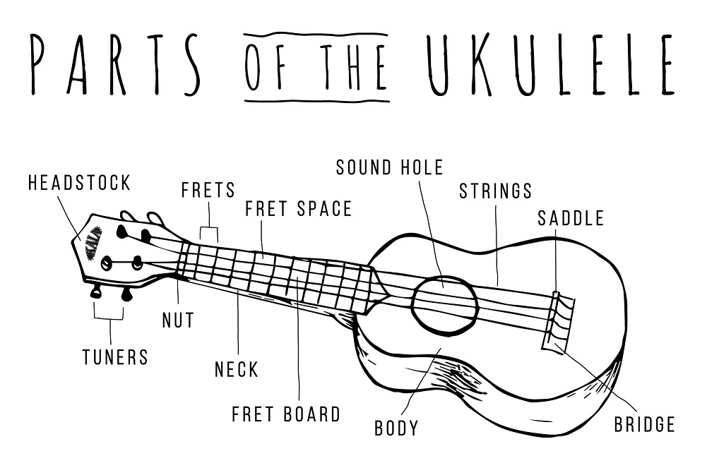
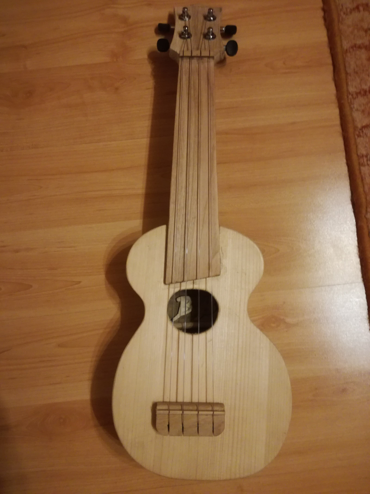
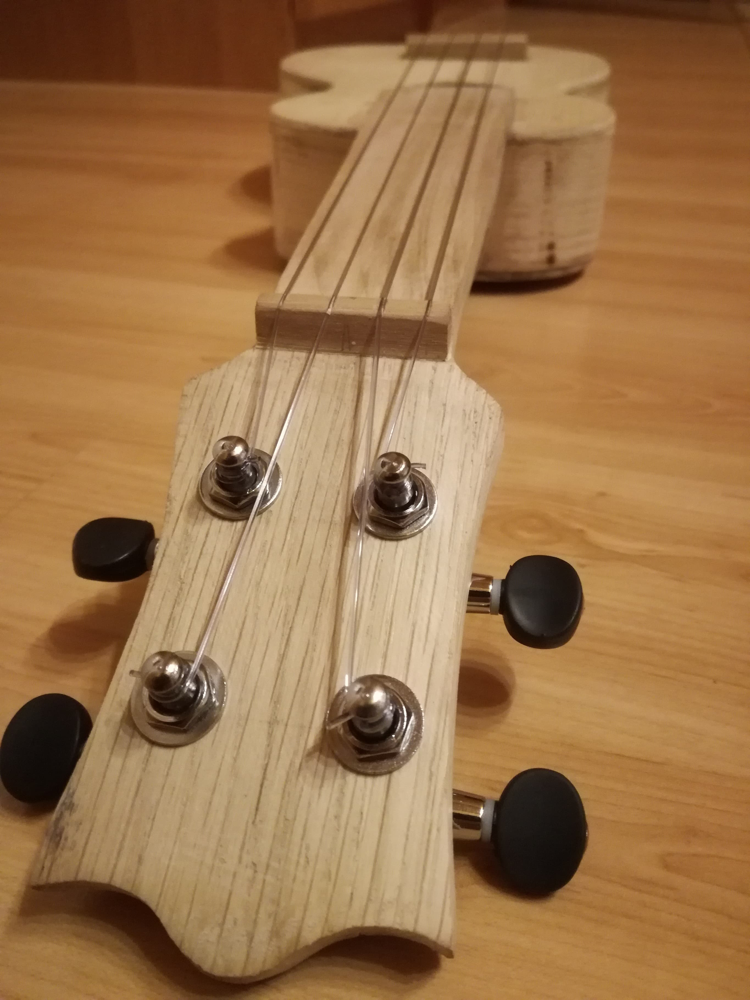
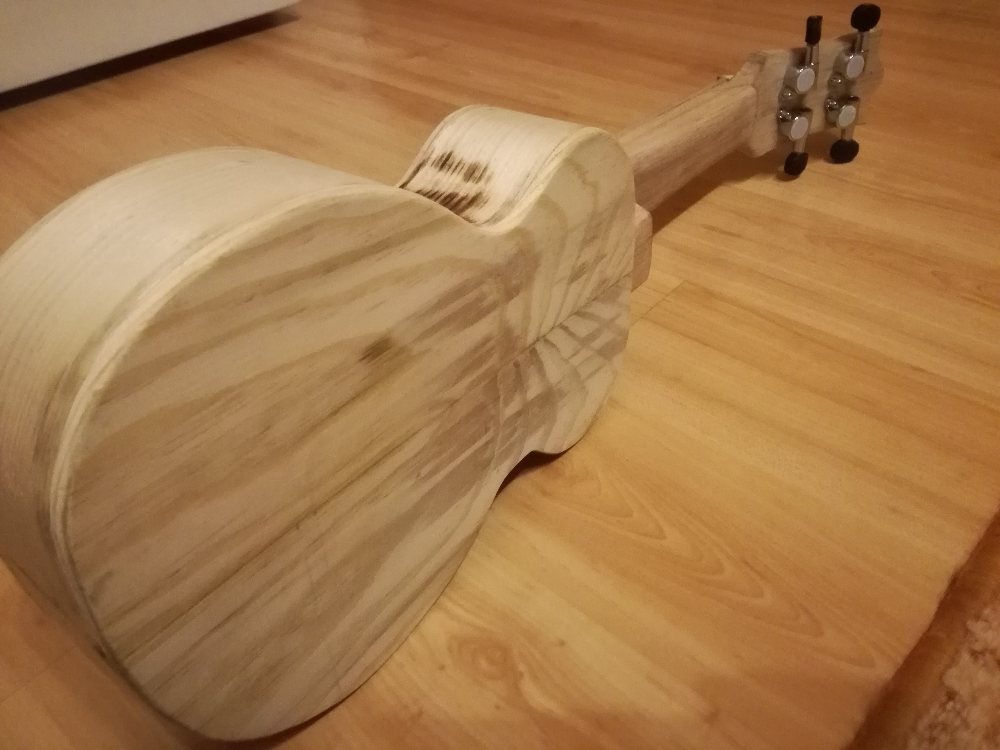
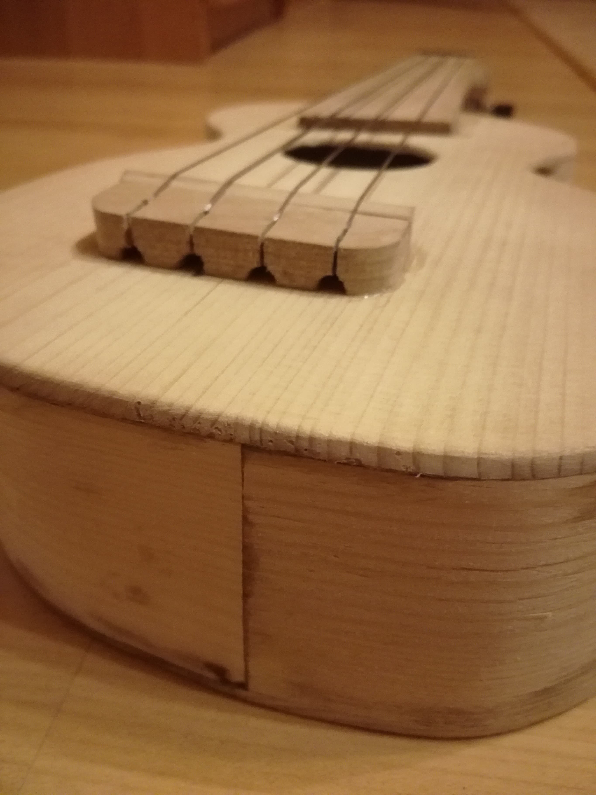
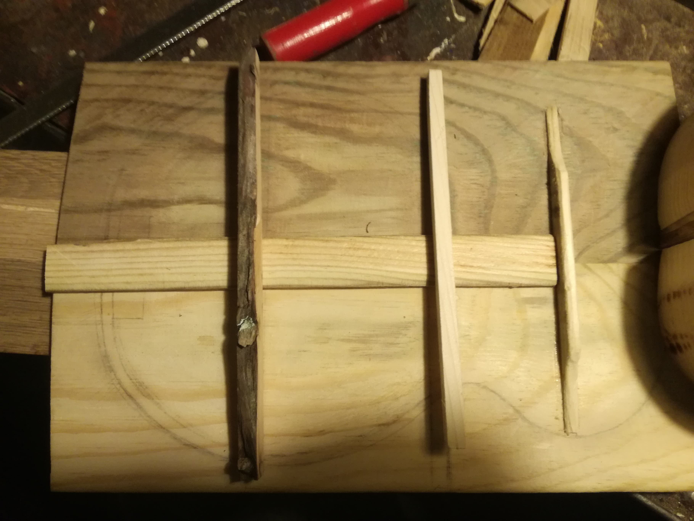
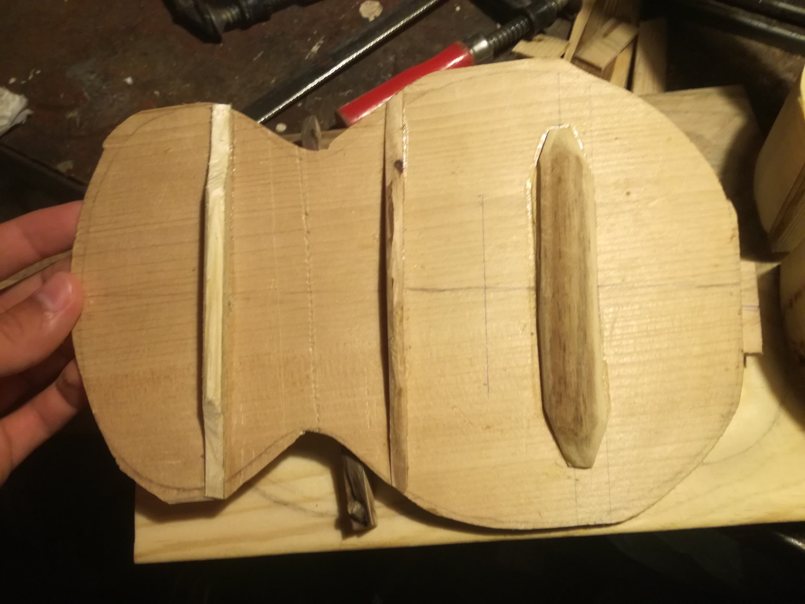
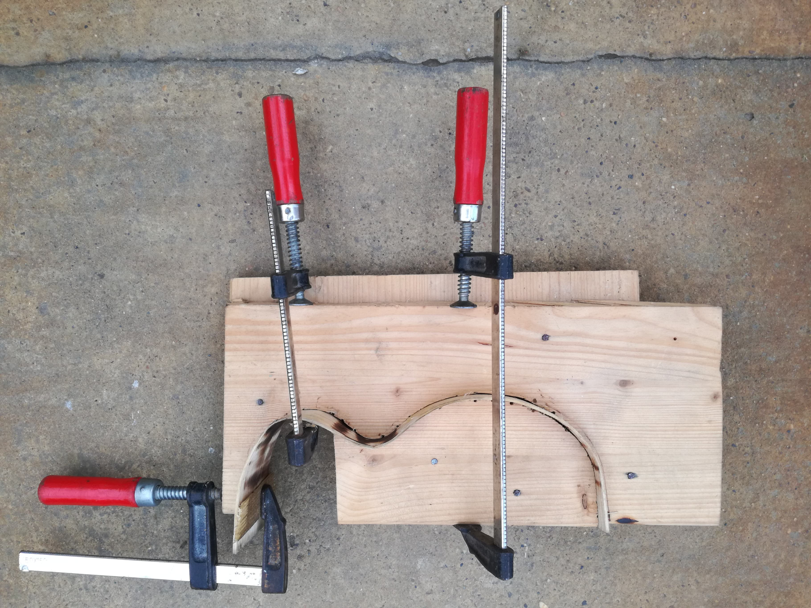
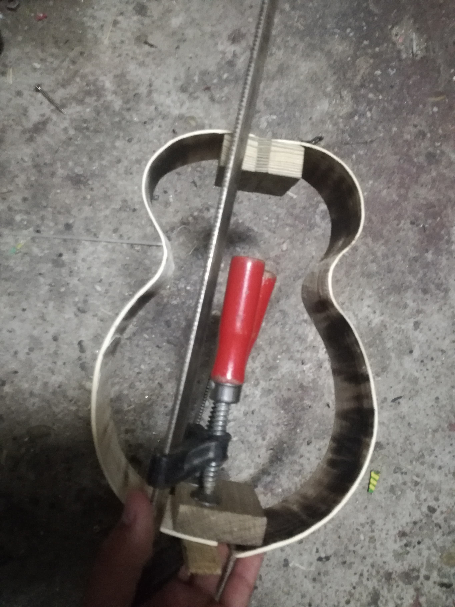
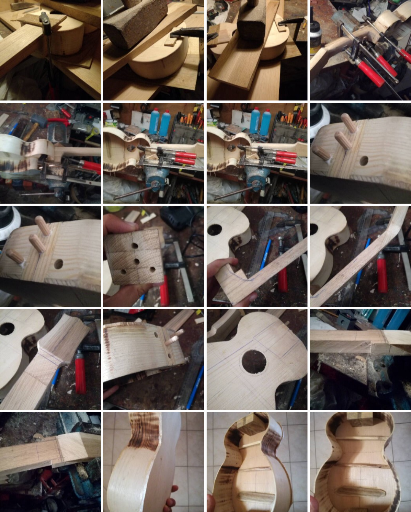

Az ukulele
Az ukulele húros hangszer, tulajdonképpen a gitár kicsi, négyhúros változata, a polinéz szigetvilág kedvelt hangszere.Az ukulelének négy főbb változata ismert (a kisebbtől a nagyobb felé haladva):
- szoprán (az eredeti méret)
- koncert
- tenor (1920 óta)
- bariton (az 1940-es évek vége óta)
|

|
Az ukulele részei az alábbi képen megtekinthetőek:

Munkálatok
Ez egy féléves projekt volt, a nyáriszünet kezdetétől karácsonyig dolgoztam a hangszeren. A munkafolyamat során próbáltam minimálisra csökkenteni az elektronikus gépek használatát és csak a kézügyességemre hagyatkozni.
A tervrajzot ceruzával másoltam le, aminek most nagy hasznát veszem a szerktan gyakorlati feladatoknál.








